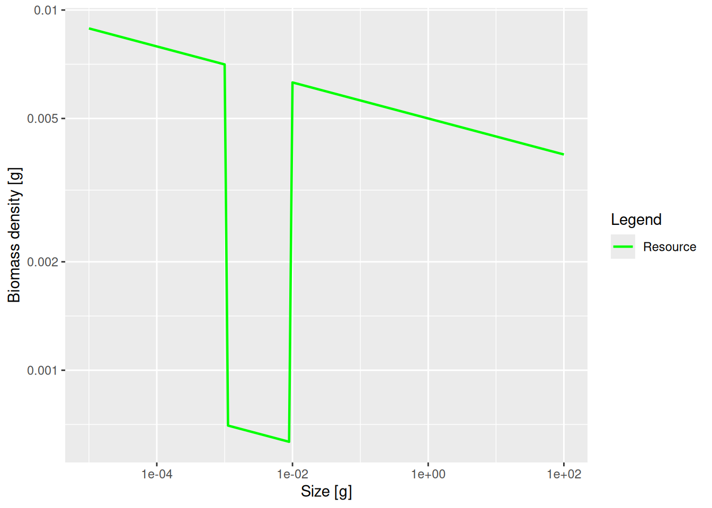
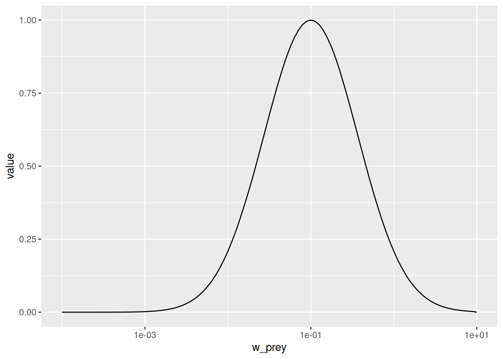
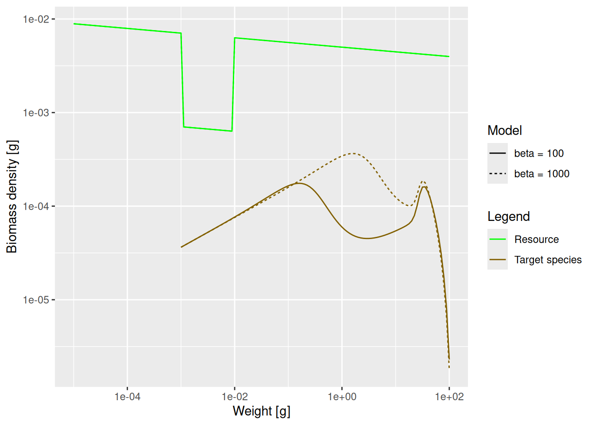
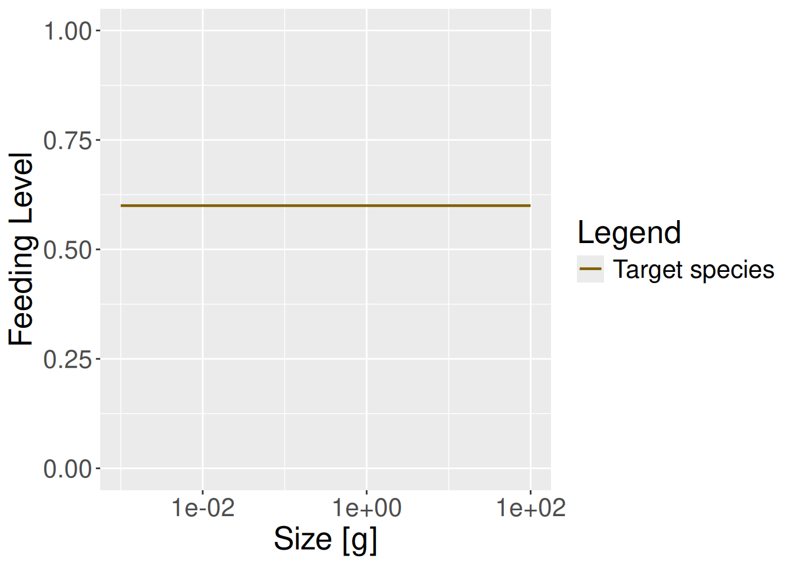
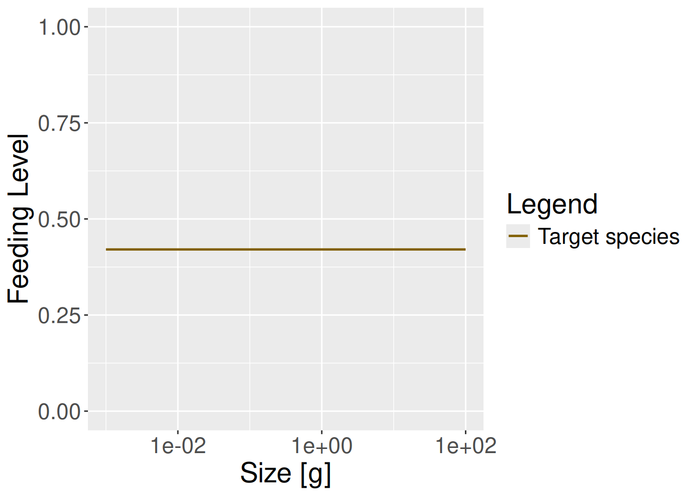
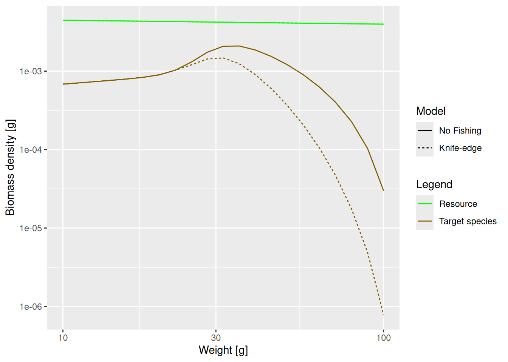

library(mizer)
library(mizerExperimental)
library(tidyverse)
params <- newSingleSpeciesParams(lambda = 2.05)Predation, growth and mortality
It is now time to discuss the important issue of predation. It is through predation that a fish obtains the energy it needs to maintain its metabolism, to grow and to invest in reproduction. But also a large proportion of the natural mortality of fish comes from predation by their predators. So it is important how mizer models predation. While you can also read about the details in the description of the general mizer size-spectrum model, in this tutorial we will approach the topic in a more hands-on fashion, using the mizer package itself to experiment and help us build intuition.
As in the previous tutorial, we load the mizer, mizerExperimental and tidyverse packages and create a single-species model with a power-law background with exponent -2.05.
Growth
Effect of prey availability
The energy income for a fish comes from predation on its prey. If there is less prey, the fish consumes less and its growth rate will decrease. Let us investigate this by artificially removing some prey. Because in our simple single-species model we work with a fixed community spectrum that is under our control, we can do that.
Below we decrease the community spectrum by a factor of 10 in the size range from 1mg to 10mg.
# Create a new parameter object to be able to keep the old one unchanged.
params_starved <- params
# Create logical vector identifying the size bins we want to change.
# Here `w_full(params)` returns a vector with all size bins in the model
size_range <- w_full(params) > 10^-3 & w_full(params) < 10^-2
# Divide the abundances in those size bins by 10
initialNResource(params_starved)[size_range] <-
initialNResource(params)[size_range] / 10Let’s make a plot to check that this did what we intended:
# The `species = FALSE` means that we will only plot the background
plotSpectra(params_starved, power = 2, species = FALSE)
The plot shows the big drop in the background abundance in our selected size range. This reduced availability of prey in that size range will lead to a drop in the growth rate in the fish that feed in that size range. We can see the slow-down in growth by comparing the growth rates in the original model and the new model. We will use the method that we saw at the end of the previous tutorial in the section “Two curves in one plot”.
gf_original <- melt(getEGrowth(params))
gf_original$Model <- "Original"
gf_starved <- melt(getEGrowth(params_starved))
gf_starved$Model <- "Less prey"
gf <- rbind(gf_original, gf_starved)
growth_rates_plot <- ggplot(gf, aes(x = w, y = value, linetype = Model)) +
geom_line() +
scale_x_log10("Weight [g]") +
ylab("Growth rate [g/year]")
growth_rates_plotThe slow-down occurs at a size that is about a factor of 100 larger than the size at which food is reduced. Why this is we will discuss in the next section.
The dip in the growth rate may not seem very significant in the above plot, but it has a dramatic effect on the steady state size distribution of our species. We know from the previous tutorial that we can set the abundances in the single-species model to the steady state value with
params_starved <- steadySingleSpecies(params_starved)We can now visualise the difference in the size spectra with the plotSpectra2() function:
spectra_plot <- plotSpectra2(params, name1 = "Original",
params_starved, name2 = "Less prey",
power = 2)
spectra_plot
The lack of food and the resulting slow-down in growth leads to a severe drop in the density of large fish. Because fish do not get enough food and do not grow into the next size class, they are stuck in smaller size classes for a longer time and are affected by mortality, which is higher for small size classes.
One may think that the drop in abundance is at sizes where the predator encounters fewer prey than before and thus has lower growth rate. This is what classic predator-prey thinking would suggest: low prey abundance leads to low predator abundance. Size spectrum dynamics is different. To drive this point home we will display the growth rate plots and the spectrum plots directly above each other
growth_rates_plot
spectra_plotWe see that where the growth starts slowing down, the abundance actually increases. This is because a decrease in the growth rate leads to a pile-up of individuals. You know this phenomenon from traffic jams. Where the speed of the cars decreases on a motorway, their density increases. Then when the speed increases again on the other side of the traffic jam, the density of cars drops and you wonder what caused the traffic jam in the first place. We see the same phenomenon in size spectrum dynamics. We see from the graphs above: it is where the growth rate starts growing faster again that the density goes down.
Important
The above shows that size spectrum dynamics is very different from predator-prey dynamics.
The reduction of prey has led to a significant reduction in the overall abundance of the species. This is in spite of the fact that we have kept the abundance constant at the lowest size, i.e. we assumed that recruitment of new fish is not affected by what happens in larger size classes. In reality, the drastic reduction of spawning stock biomass will lead to a reduction in the number of eggs as well, so the effect will be even more dramatic.
Here we hand over to you to investigate what happens when the prey abundance is increased instead of decreased. Please open the worksheet named “worksheet3-predation-growth-and-mortality.Rmd” in your worksheet repository, where you will find the following exercise:
Exercise 1
Make a single plot, similar to the one above, comparing the steady state biomass density in log weight in the original model with that when the community abundance is increased by a factor of 10 in the size range from 1mg to 10mg.
Show me the solution
params_overfed <- params
initialNResource(params_overfed)[size_range] <-
initialNResource(params)[size_range] * 10
params_overfed <- steadySingleSpecies(params_overfed)
plotSpectra2(params, name1 = "Original",
params_overfed, name2 = "More prey",
power = 2)How predation is modelled
The easiest case in which to understand predation is to imagine a filter-feeding fish, swimming around with its mouth open. Clearly the amount of food it takes in is determined by four things:
- the density of prey in the water,
- how much volume of water the fish is able to filter, which will depend on how fast it swims as well as on its gape size.
- what sizes of prey the fish is able to filter out of the water, which will be limited by its gape size and by how fine its gill rakers are,
- how fast it can digest the food. If it can filter the prey faster than it can digest, it will have to start letting prey go uneaten.
For a more active hunter the situation will be similar. The rate at which it predates will depend on four things:
- the density of prey in the water
- the volume of water that the fish patrols and in which it will be able to seek out its prey. This may depend on things like radius of vision.
- which of this detected prey the fish is able to catch, which will depend on its mouth size but also on its agility and skill as well as on the defensive mechanisms of the prey.
- how fast it can digest the food.
Of these four factors, we have already been discussing the density of prey. In the next section we will discuss the ability to filter out or catch prey of particular sizes, which we model via the predation kernel. In the section after that we will discuss the search volume and then in the following section the maximum consumption rate.
The predation kernel
Fish will be particularly good at catching prey in a specific range of sizes, smaller than themselves. This is encoded in the size-spectrum model by the predation kernel. Let us take a look at the predation kernel in our model. We can obtain it with the function getPredKernel().
pred_kernel <- getPredKernel(params)This is a large three-dimensional array (predator species x predator size x prey size). We extract the kernel of a predator of size 10g (using that we remember that this is in size class 81)
pred_kernel_10 <- pred_kernel[, 81, , drop = FALSE]The drop = FALSE option is there to prevent R from dropping any of the array dimensions. We can now plot this as usual
ggplot(melt(pred_kernel_10)) +
geom_line(aes(x = w_prey, y = value)) +
scale_x_log10(limits = c(1e-4, 10))Warning: Removed 181 rows containing missing values (`geom_line()`).
We see that the predator of size 10g likes to feed on prey that is about the size of 0.1g, which is about 100 times smaller than itself. But it also feeds on other sizes, just with reduced preference. The preferred predator/prey size ratio is determined by the species parameter beta and the width of the feeding kernel, i.e., how fussy the predator is regarding their prey size, is determined by the species parameter sigma. beta is the preferred predator prey mass ratio or PPMR. Larger PPMR values mean that the predator prefers to feed on a relatively smaller prey (larger ratio). In our model these have the values
select(species_params(params), beta, sigma)Let us change the preferred predator prey mass ratio from 100 to 1000. As usual, we first create a copy of the parameter object, then we make the change in that copy.
params_pk <- params
species_params(params_pk)$beta <- 1000Let’s make a plot to see that the predation kernel has indeed changed.
getPredKernel(params_pk)[, 81, , drop = FALSE] %>%
melt() %>%
ggplot() +
geom_line(aes(x = w_prey, y = value)) +
scale_x_log10(limits = c(1e-4, 10))Warning: Removed 181 rows containing missing values (`geom_line()`).If we now again reduce the prey in the size range from 1mg to 10mg as before, we now expect this to produce a peak in the biomass spectrum somewhere between 1g and 10g. Let’s check.
# Put reduced resource abundance values into params_pk
initialNResource(params_pk) <- initialNResource(params_starved)
# Find the new steady state, because conditions have changed.
params_pk <- steadySingleSpecies(params_pk)
plotSpectra2(params_starved, name1 = "beta = 100",
params_pk, name2 = "beta = 1000",
power = 2)
The dip is indeed happening later.
Links to documentation
For details of how beta and sigma parametrise the predation kernel, see https://sizespectrum.org/mizer/reference/lognormal_pred_kernel.html#details. For information on how to change the predation kernel, see https://sizespectrum.org/mizer/reference/setPredKernel.html#setting-predation-kernel
Important
Do not confuse the prey preference with the diet. Just because a predator might prefer to feed on prey of a particular size if it had free choice does not mean that it actually feeds predominantly on such prey. The actual diet of the fish depends also on the availability of prey. Because smaller prey are more abundant, the realised predator prey mass ratio in the diet will be smaller than the preferred predator prey mass ratio. This is particularly important when estimating the predation kernel from stomach data.
Search volume
Next we consider the factor that models the volume of water a filter feeder is able to filter in a certain amount of time, or the volume of water a predatory fish is able to patrol in a certain amount of time. This is difficult to model from first principles, although people have tried to argue in terms of swimming speeds of fish. We assume that this search volume rate is also an allometric rate. Let \gamma(w), also called gamma, denote this rate for a predator of size w. Thus we assume that \gamma(w) = \gamma_0\ w^q for some exponent q. We know that a fish needs to consume prey at a rate that scales with its body size to the power n, with n about 3/4. We also know that the prey density will be approximately described by a power law, i.e., that N(w) \approx N_0\ w^{-\lambda}. A bit of maths then says that q = 2 - \lambda + n. The formula is based on observations about size distributions and the fact that in the real world, evolution had made sure that the fish have developed a feeding strategy that allows it to cover its metabolic costs. Together this would have led to that search volume exponent of approximately q=2-\lambda+n but of course in reality there is quite a bit of variability.
This is one of many powerful aspects about strong theoretical basis behind size based models. We can of course disagree with this assumption if we have evidence and data, but at least there is a basic assumption to base the discussion on.
Most people using mizer rarely modify the default assumptions about the body scaling exponents and focus on more on the coefficients. So let us see what effect changing the coefficient \gamma_0 in the search volume rate has. Its current value in our model is
species_params(params)$gamma[1] 2066.004We change that to 1000 and find the new steady state.
params_new_gamma <- params
species_params(params_new_gamma)$gamma <- 1000
params_new_gamma <- steadySingleSpecies(params_new_gamma)We can see the effect in the growth curve of our species.
gf_original <- plotGrowthCurves(params, return_data = TRUE)
gf_original$Model <- "Original"
gf_new <- plotGrowthCurves(params_new_gamma, return_data = TRUE)
gf_new$Model <- "Reduced search volume"
ggplot(rbind(gf_original, gf_new), aes(x = Age, y = value, colour = Model)) +
geom_line()As expected, the smaller search volume leads to a slower growth due to slower feeding rate.
Feeding level
In mizer we assume that the feeding rate follows a Holling type II feeding curve. This means that feeding rate is increasing linearly with prey density at low prey density but then the increase slows down towards a maximum at high prey density due to the satiation of the predator. A predator will not be able to utilise food at a faster rate than its maximum intake rate. Of course in practice it will not feed at the maximum intake rate because of limited availability of prey. We describe this by the feeding level which is the proportion of its maximum intake rate at which the predator is actually taking in prey.
In our simple model this feeding level is constant across all fish body sizes (this is rarely the case in more realistic models, as you will see later).
plotFeedingLevel(params) + theme(text = element_text(size = 20))
plotFeedingLevel(params_new_gamma) + theme(text = element_text(size = 20))

In the model with the reduced search volume the feeding level is lower, as one would expect.
The feeding level will depend on the maximum intake, search rate and food availability. The maximum intake rate scales with body size with the exponent n = 3/4 and is determined by the coefficient h. So the maximum intake rate at size h(w) is modelled as h(w) = h w^n. Again, if we want to modify the maximum intake rate we usually change the coefficient h. We will do that in later tutorials. The current value of the coefficient h is
species_params(params)$h[1] 30and is measured in gram of food per \text{gram}^{-n} of predator weight per year (remember, maximum consumption scales with fish weight to the power of n).
Mortality
Predation mortality
Of course, feeding of the predator is only one aspect of predation. The other is the death of the prey. Feeding and mortality are coupled. Increased feeding and growth of one class of individuals will necessitate increased death of another. There is no free lunch.
Once we have specified the predation parameters, these parameters determine both the growth of predators but also the mortality rate of prey. So we don’t have to introduce new parameters for death from predation. Of course with a one-species model we cannot easily demonstrate this predation. We will explore predation more thoroughly in future tutorials.
Background and external mortality
In more realistic multi-species models, mortality also includes a baseline, size-independent mortality. This is also often called background mortality and it accounts for processes that are not related to predation, for example disease. This background mortality in mizer is assumed to depend on the maximum body size of a species, as you will see later.
In addition, mizer allows you to include other sources of external mortality. This could be predation from animals that we have not included in our model, like sea birds or mammals, death from old age (senescent death) and so on.
Fishing mortality
The cause of mortality that is most under our control is mortality from fishing. Mizer allows the simulation of mixed fisheries, utilising several different gears (or metiers or fleets) catching several different species. The parameters describing the fishing gears are stored in a gear_params data frame. If a particular gear can catch a particular species, there will be a corresponding row in the gear_params data frame specifying the catchability of that species for that gear as well as the size-selectivity of the gear for that species. We discuss in more detail how fishing is set up in mizer in Part 3 of this course when we study the consequences of changes in fishing policy.
Here we only look at what fishing gear is set up by default in our simple single-species model:
gear_params(params)We see that there is only one gear, called “knife_edge_gear” targeting our one species, called “Target species”. The size-selectivity is described by a knife_edge function with a knife_edge_size of about 25 grams. This means that all fish greater than about 25 grams will be exposed to the same fishing mortality while smaller fish will experience no fishing mortality. Mizer can of course also deal with more general selectivity curves.
We also need to specify the fishing effort, which will be multiplied by the catchability and the selectivity to get the annual instantaneous fishing mortality rate. For illustration we will set the effort to 1 and plot the resulting fishing mortality.
params_fishing <- params
initial_effort(params_fishing) <- 1
plotFMort(params_fishing)The reason why the function that we have used to set the effort is called initial_effort() is that later when we run simulations of the fisheries mizer allows us to specify how the fishing effort changes over time. For now let us just look at what the new steady state size spectrum of our species looks like when it is exposed to the constant fishing effort, compared to the unfished steady state.
params_fishing <- steadySingleSpecies(params_fishing)
plotSpectra2(params, name1 = "No Fishing",
params_fishing, name2 = "Knife-edge",
power = 2, wlim = c(10, NA))
The difference may not seem to be very big, but note that we are using a logarithmic scale on the y axis. At large sizes the biomass densities differ almost by a factor of 30.
Summary and recap
1) In a mizer model the growth curve is not fixed but instead the growth rate of an individual changes as the prey abundance changes. This makes it important to understand how fish choose their prey.
2) A size spectrum model reacts differently to low prey abundance than a predator-prey model. In a size spectrum model when the growth rate of a predator slows down due to lack of prey, the abundance of predators of that size increases.
3) A fish is assumed to have a feeding preference for prey in a range of sizes at a certain fraction of its own size. So as the fish grows up, its preference shifts to larger sizes, an effect known as ontogenetic diet shift.
4) The search rate of a species determines the rate at which it can find food and thus influences its growth rate. In mizer this search rate is an allometric rate with exponent q which by default is set as q=2-\lambda+n so that at least in the larval stage the growth rate scales with exponent n = 3/4.
5) Fish have a maximum intake rate that scales with body size with exponent n = 3/4. Due to scarcity of prey they will only feed at a proportion of their maximum intake rate. This proportion is called the feeding level.
6) Species size spectra depend strongly on mortality rates and in a realistic model this mortality rate will depend on the abundance of predators. We will explore this in greater detail in the next tutorials. Here we just looked at the effect of fishing mortality on the size spectrum.